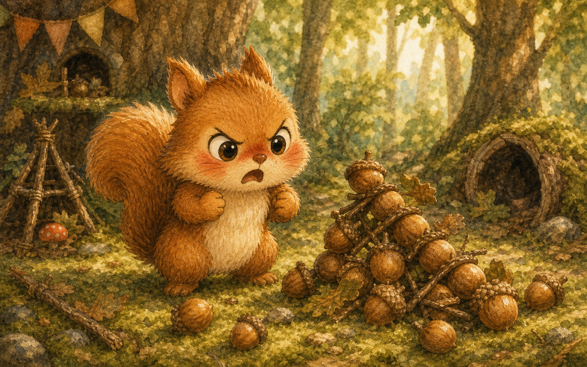
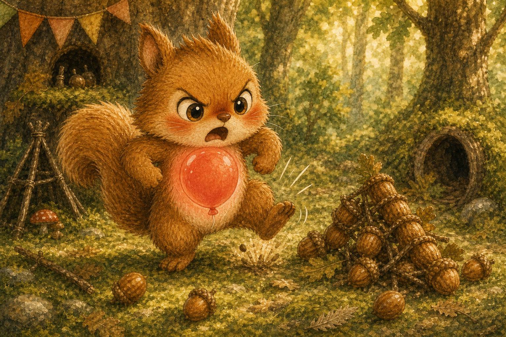
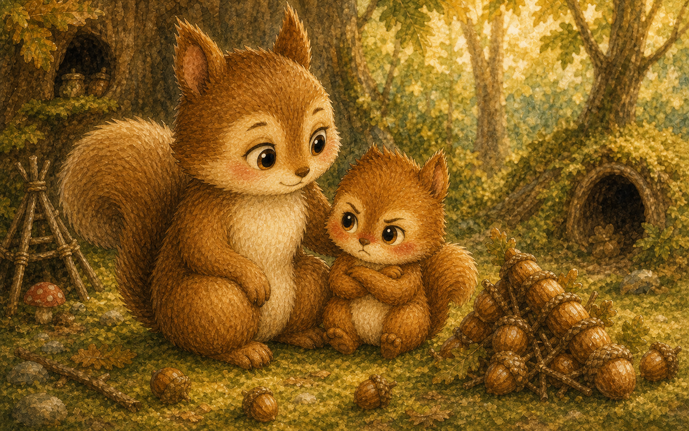
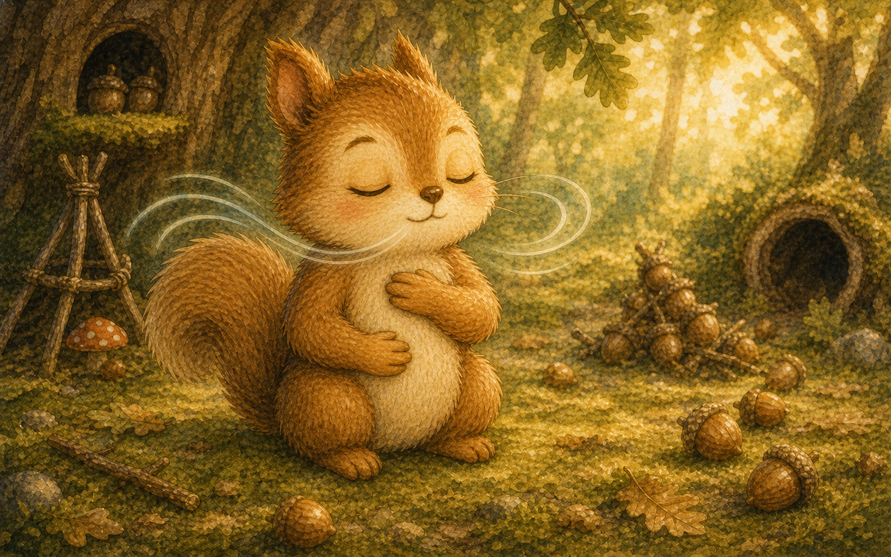
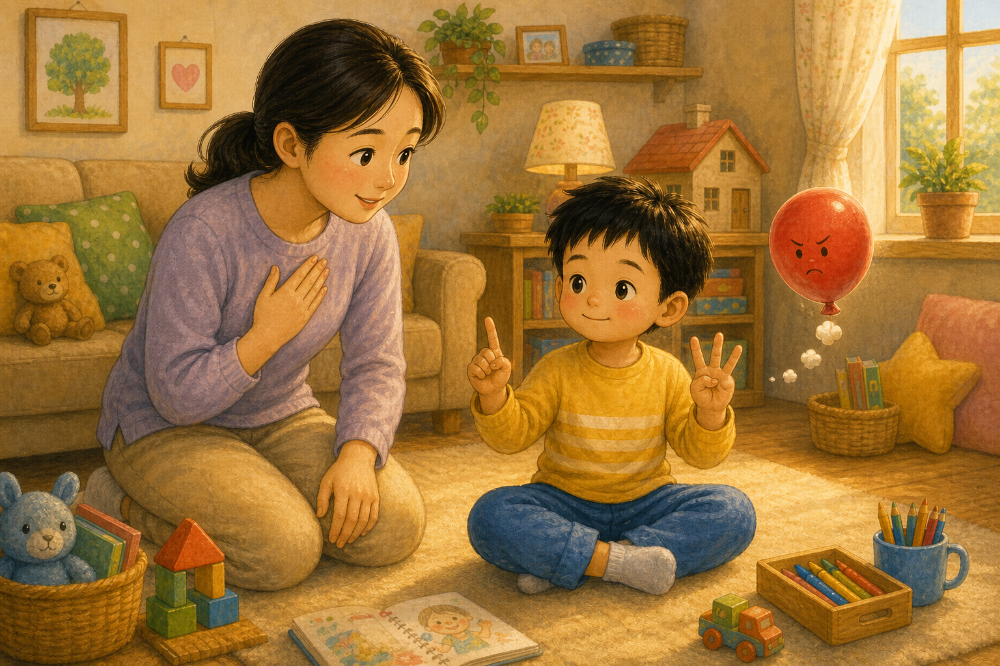
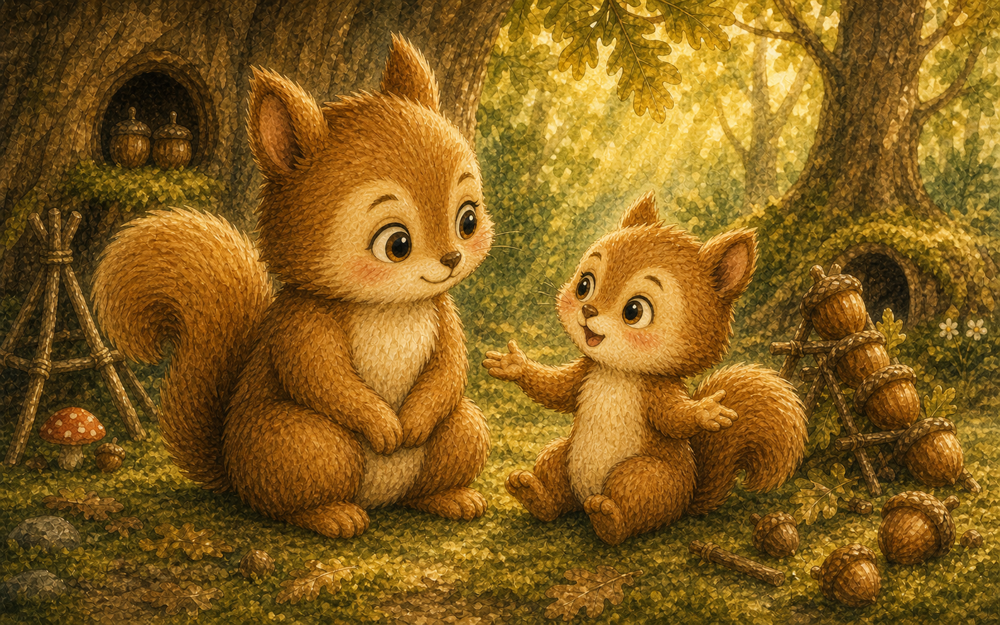
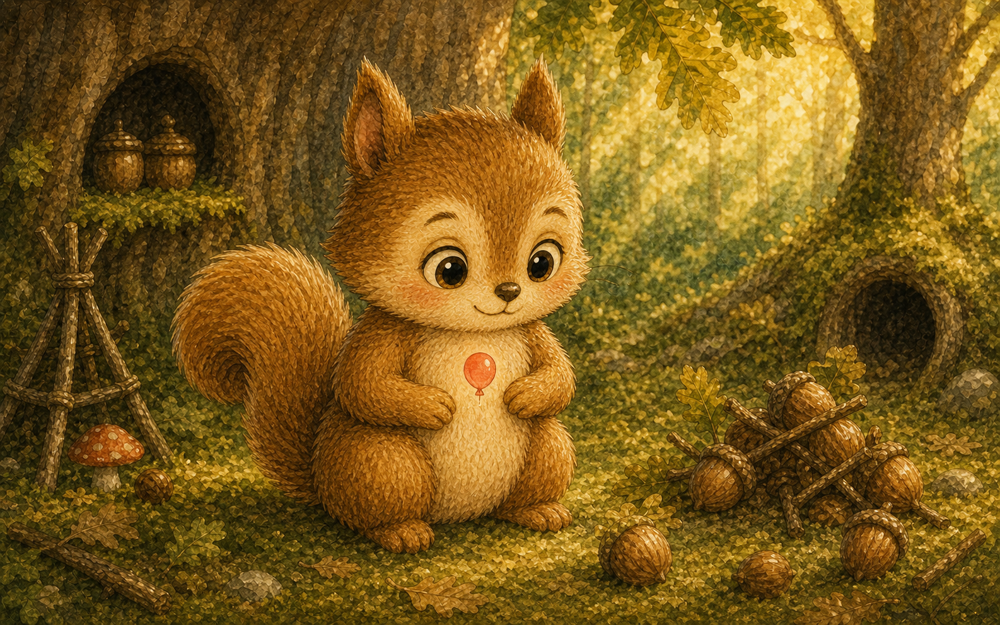
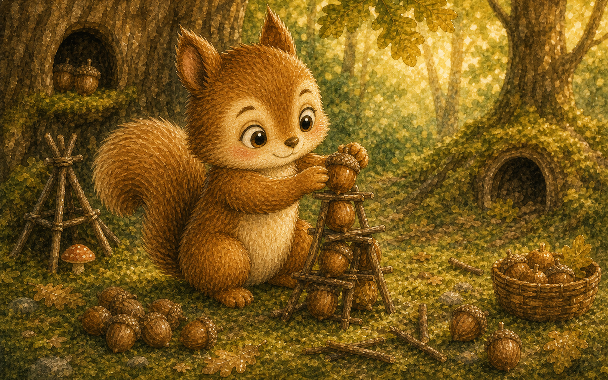
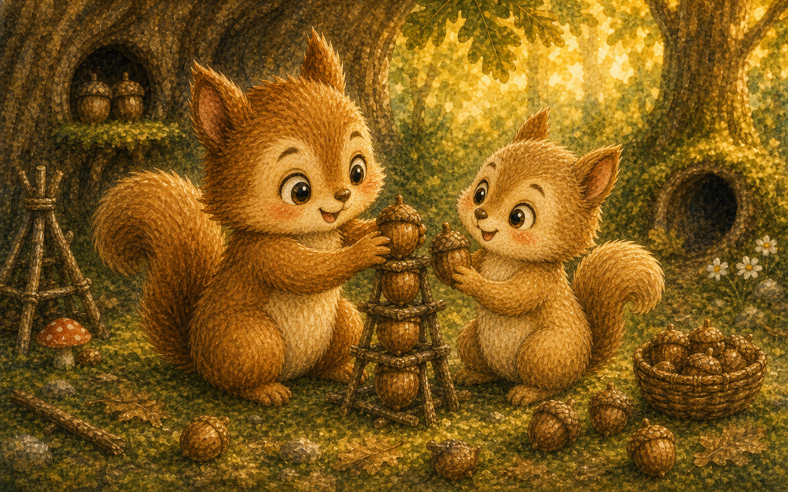
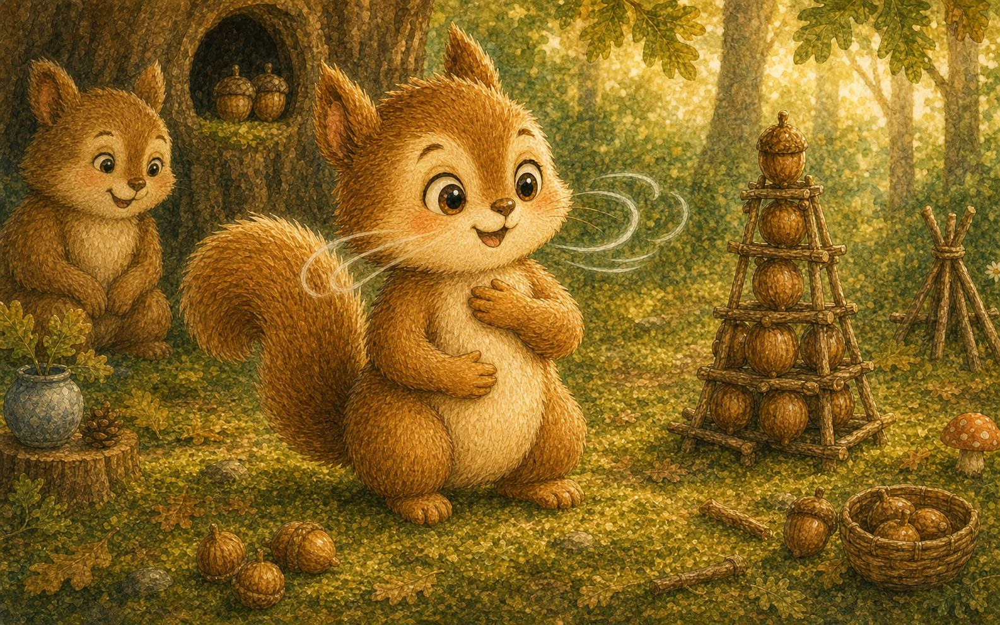

빨개진 얼굴
다람쥐 토토는 쌓아 둔 도토리 탑이 와르르 무너지자 얼굴이 빨개졌어요. 가슴속에서 무언가 풍선처럼 부풀어 올랐지요.
"으아, 화가 나!"

다람쥐 토토는 쌓아 둔 도토리 탑이 와르르 무너지자 얼굴이 빨개졌어요. 가슴속에서 무언가 풍선처럼 부풀어 올랐지요.
"으아, 화가 나!"

화가 나면 마음속 빨간 풍선이 점점 커졌어요. 풍선이 너무 커지면 토토는 발을 쿵쿵 굴렀지요.
풍선은 자꾸자꾸 부풀기만 했어요.

엄마 다람쥐가 다가와 조용히 말했어요. 화가 날 땐 풍선의 바람을 천천히 빼면 된다고요.
"후우, 숨을 길게 내쉬어 볼까?"

토토는 코로 들이쉬고 입으로 후우 내쉬었어요. 한 번, 두 번, 세 번 숨을 쉬자 풍선이 조금 작아졌지요.
"어? 가슴이 조금 시원해졌어."

엄마는 마음속으로 숫자를 세어 보자고 했어요. 하나, 둘, 셋을 세는 동안 화가 천천히 가라앉았답니다.
숫자를 셀수록 풍선은 더 작아졌어요.

토토는 "탑이 무너져서 속상했어"라고 말했어요. 기분을 말로 꺼내자 답답함이 사르르 풀렸지요.
"화났던 게 아니라 속상했던 거구나."

커다랗던 빨간 풍선이 손바닥만큼 작아졌어요. 토토의 얼굴빛도 다시 보송보송해졌답니다.
발을 쿵쿵 구르지 않아도 괜찮았어요.

토토는 무너진 도토리를 하나씩 다시 쌓기 시작했어요. 천천히 쌓으니 탑은 더 튼튼해졌지요.
화를 가라앉히니 좋은 생각이 떠올랐어요.

지나가던 친구가 함께 도토리를 올려 주었어요. 둘이 만든 탑은 가장 높고 멋졌답니다.
"같이 하니까 더 재밌다!"

이제 토토는 화 풍선이 부풀면 후우 숨을 쉬어요. 그러면 풍선은 다시 작아진다는 걸 알았으니까요.
"후우, 하나, 둘, 셋. 이제 괜찮아."